CHAPTER 02 / 中英对照
缓存一致性基础
Coherence Basics
本章目录
原书第 9 页PDF 31
ENGLISHIn this chapter, we introduce enough about cache coherence to understand how consistency models interact with caches. We start in Section 2.1 by presenting the system model that we consider throughout this primer. To simplify the exposition in this chapter and the following chapters, we select the simplest possible system model that is sufficient for illustrating the important issues; we defer until Chapter 9 issues related to more complicated system models. Section 2.2 explains the cache coherence problem that must be solved and how the possibility of incoherence arises. Section 2.3 precisely defines cache coherence.
中文本章介绍必要的缓存一致性知识，以便理解内存一致性模型如何与缓存交互。2.1节首先给出本书采用的系统模型。为简化本章及后续章节的阐述，我们选取足以说明关键问题的最简单系统模型；与更复杂系统模型有关的问题留到第9章讨论。2.2节解释必须解决的缓存一致性问题，以及缓存不一致为何可能发生。2.3节精确定义缓存一致性。
ENGLISH2.1 BASELINE SYSTEM MODEL
中文2.1 基准系统模型
ENGLISHIn this primer, we consider systems with multiple processor cores that share memory. That is, all cores can perform loads and stores to all (physical) addresses. The baseline system model includes a single multicore processor chip and off-chip main memory, as illustrated in Figure 2.1. The multicore processor chip consists of multiple single-threaded cores, each of which has its own private data cache, and a last-level cache (LLC) that is shared by all cores. Throughout this primer, when we use the term “cache,” we are referring to a core’s private data cache and not the LLC. Each core’s data cache is accessed with physical addresses and is write-back. The cores and the LLC communicate with each other over an interconnection network. The LLC, despite being on the processor chip, is logically a “memory-side cache” and thus does not introduce another level of coherence issues. The LLC is logically just in front of the memory and serves to reduce the average latency of memory accesses and increase the memory’s effective bandwidth. The LLC also serves as an on-chip memory controller.
中文本书考虑由多个处理器核共享内存的系统，即所有核均可对全部（物理）地址执行 load 和 store 操作。基准系统模型由一颗多核处理器芯片和片外主存构成，如图2.1所示。多核处理器芯片包含多个单线程核，每个核都有自己的私有数据缓存，此外还有由所有核共享的末级缓存（LLC）。本书中的“缓存”一词指处理器核的私有数据缓存，不包括LLC。各核的数据缓存使用物理地址访问，并采用写回策略。处理器核与LLC通过互连网络通信。LLC虽位于处理器芯片上，但在逻辑上属于“内存侧缓存”，因此不会引入另一层缓存一致性问题。LLC在逻辑上位于主存之前，用于降低内存访问的平均延迟，并提高内存的有效带宽。LLC还承担片上内存控制器的作用。
ENGLISHThis baseline system model omits many features that are common but that are not required for purposes of most of this primer. These features include instruction caches, multiple-level caches, caches shared among multiple cores, virtually addressed caches, TLBs, and coherent direct memory access (DMA). The baseline system model also omits the possibility of multiple multicore chips. We will discuss all of these features later, but for now, they would add unnecessary complexity.
中文这个基准系统模型省略了许多常见特性，因为本书的大部分讨论并不需要它们。这些特性包括指令缓存、多级缓存、多核共享缓存、虚拟寻址缓存、TLB，以及支持缓存一致性的直接内存访问（DMA）。基准模型也不考虑多颗多核芯片的情况。我们将在后文讨论所有这些特性；现阶段引入它们只会增加不必要的复杂性。
查看 原书第 9 页 的完整原版面（PDF 31）
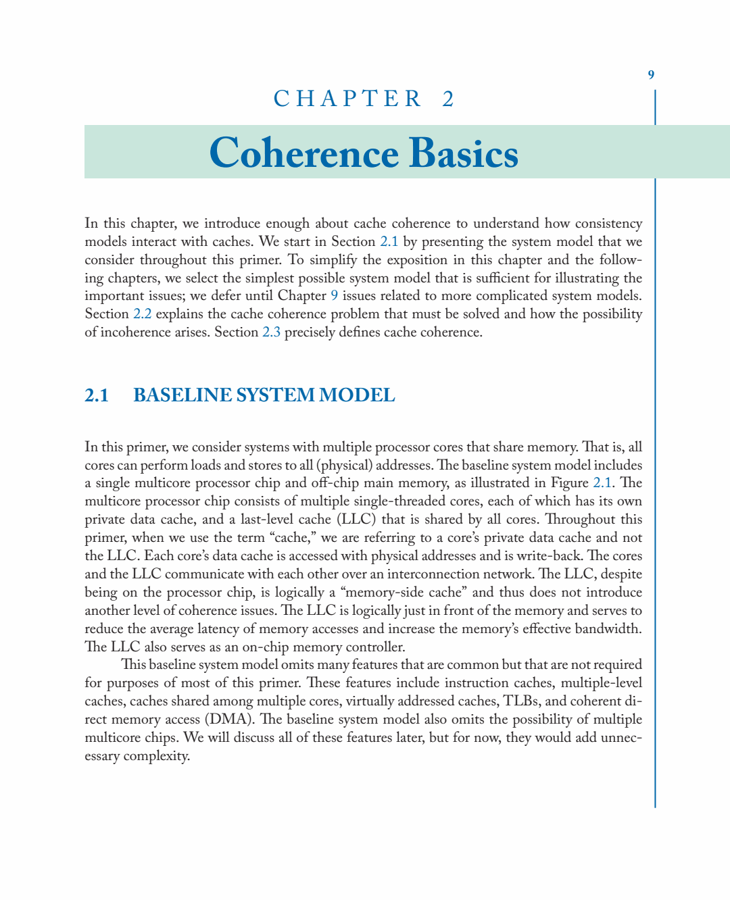
原书第 10 页PDF 32
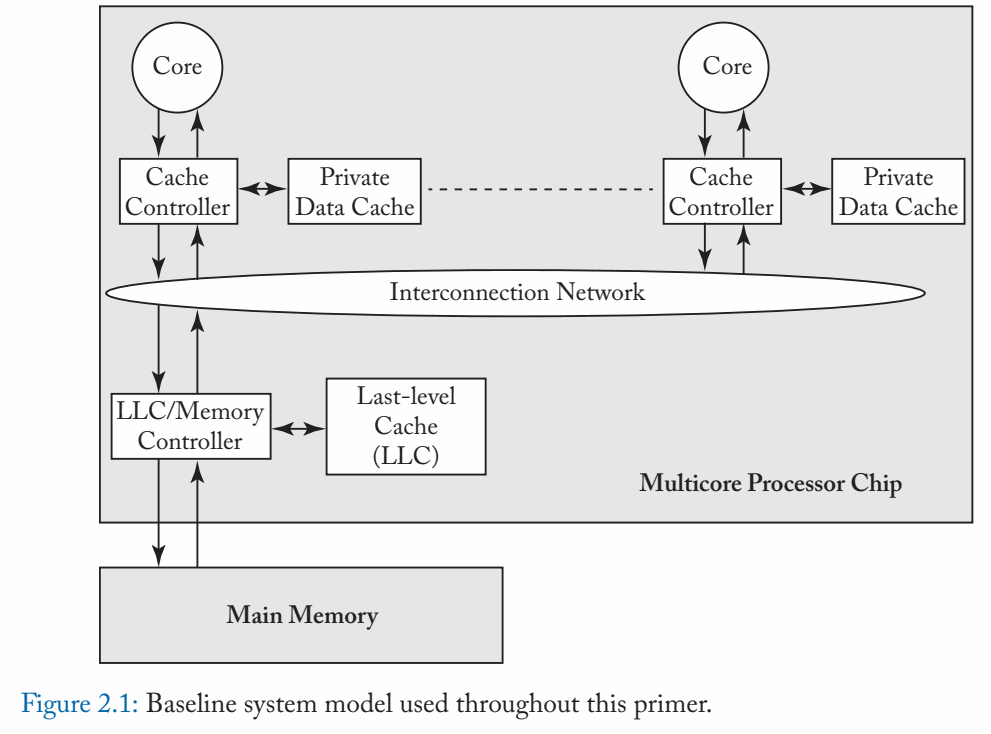
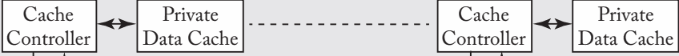
展开可搜索的英文文字
Cache Private Cache Private Controller Data Cache Controller Data Cache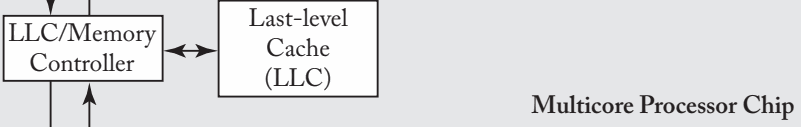
展开可搜索的英文文字
Last-level LLC/Memory Cache Controller (LLC) Multicore Processor ChipENGLISH2.2 THE PROBLEM: HOW INCOHERENCE COULD POSSIBLY OCCUR
中文2.2 问题：缓存不一致为何可能发生
ENGLISHThe possibility of incoherence arises only because of one fundamental issue: there exist multiple actors with access to caches and memory. In modern systems, these actors are processor cores, DMA engines, and external devices that can read and/or write to caches and memory. In the rest of this primer, we generally focus on actors that are cores, but it is worth keeping in mind that other actors may exist.
中文缓存不一致的可能性源于一个根本问题：存在多个能够访问缓存和内存的参与者。在现代系统中，这些参与者包括处理器核、DMA引擎，以及能够读写缓存和内存的外部设备。本书后续主要关注处理器核，但应始终记住，系统中也可能存在其他参与者。
ENGLISHTable 2.1 illustrates a simple example of incoherence. Initially, memory location A has
中文表2.1给出了缓存不一致的一个简单例子。初始时，内存位置A在主存中
ENGLISHthe value 42 in memory as well as both of the cores’ local caches. At time 1, Core 1 changes the value at memory location A from 42 to 43 in its cache, making Core 2’s value of A in its cache stale. Core 2 executes a while loop loading, repeatedly, the (stale) value of A from its local cache. Clearly, this is an example of incoherence as the store from Core 1 has not not been made visible to Core 2 and consequently C2 is stuck in the while loop.
中文及两个处理器核的本地缓存中均为42。时刻1，核1将其缓存中内存位置A的值从42改为43，因而核2缓存中的A值变得过时。核2执行一个while循环，反复从本地缓存 load A的过时值。这显然是缓存不一致：核1的 store 尚未对核2可见，导致C2一直停留在while循环中。
ENGLISHTo prevent incoherence, the system must implement a cache coherence protocol that makes the store from Core 1 visible to Core 2. The design and implementation of these cache coherence protocols are the main topics of Chapters 6–9.
中文为防止缓存不一致，系统必须实现缓存一致性协议，使核1的 store 对核2可见。这些协议的设计与实现是第6—9章的主要内容。
查看 原书第 10 页 的完整原版面（PDF 32）
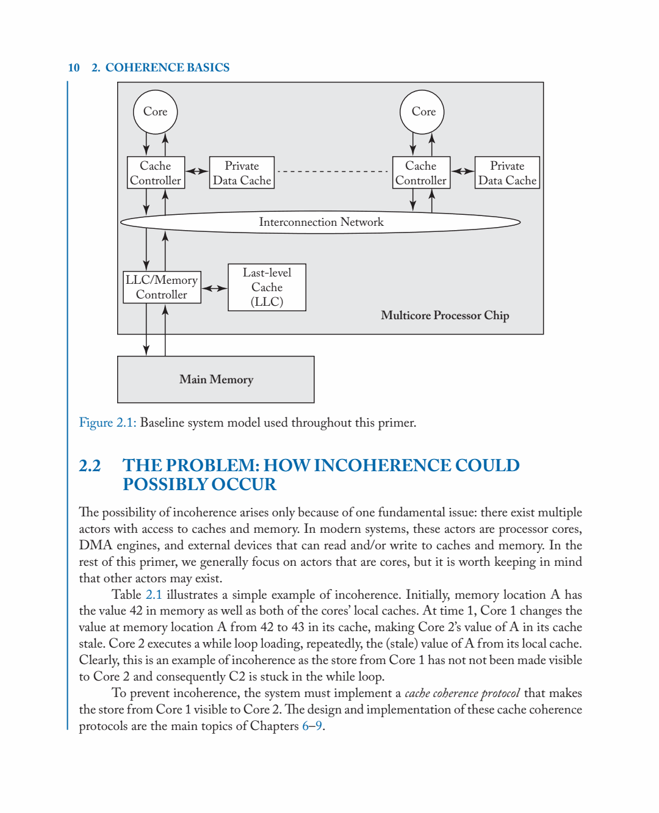
原书第 11 页PDF 33
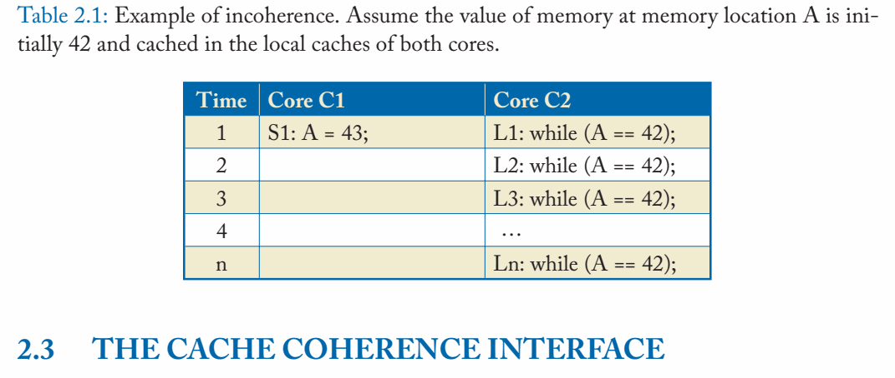
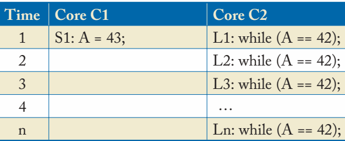
展开可搜索的英文文字
Time Core C1 Core C2 1 S1: A = 43; L1: while (A == 42); 2 L2: while (A == 42); 3 L3: while (A == 42); 4 … n Ln: while (A == 42);ENGLISH2.3 THE CACHE COHERENCE INTERFACE
中文2.3 缓存一致性接口
ENGLISHInformally, a coherence protocol must ensure that writes are made visible to all processors. In this section, we will more formally understand coherence protocols through the abstract interfaces they expose.
中文非形式化地说，缓存一致性协议必须确保写操作对所有处理器可见。本节通过协议所暴露的抽象接口，更正式地理解缓存一致性协议。
ENGLISHThe processor cores interact with the coherence protocol through a coherence interface (Figure 2.2) that provides two methods: (1) a read-request method that takes in a memory location as the parameter and returns a value; and (2) a write-request method that takes in a memory location and a value (to be written) as parameters and returns an acknowledgment.
中文处理器核通过缓存一致性接口与协议交互（图2.2）。该接口提供两种方法：（1）读请求方法，以内存位置为参数，返回一个值；（2）写请求方法，以内存位置和待写入值为参数，返回确认响应。
ENGLISHThere are many coherence protocols that have appeared in the literature and been employed in real processors. We classify these protocols into two categories based on the nature of their coherence interfaces—specifically, based on whether there is a clean separation of coherence from the consistency model or whether they are indivisible.
中文研究文献和实际处理器中出现过许多缓存一致性协议。我们根据其接口性质，将它们分为两类；具体而言，分类依据是缓存一致性与内存一致性模型能否清晰分离，还是二者不可分割。
ENGLISHConsistency-agnostic coherence. In the first category, a write is made visible to all other cores before returning. Because writes are propagated synchronously, the first category presents an interface that is identical to that of an atomic memory system (with no caches). Thus, any subsystem that interacts with the coherence protocol—e.g., the processor core pipeline—can assume it is interacting with an atomic memory system with no caches present. From a consistency enforcement perspective, this coherence interface enables a nice separation of concerns. The cache coherence protocol abstracts away the caches completely and presents an illusion of atomic memory—it is as if the caches are removed and only the memory is contained within the coherence box (Figure 2.2)—while the processor core pipeline enforces the orderings mandated by the consistency model specification.
中文与内存一致性模型无关的缓存一致性。第一类协议在写操作返回之前，使其对所有其他处理器核可见。由于写操作同步传播，这类协议提供的接口与没有缓存的原子内存系统完全一致。因此，与该协议交互的任何子系统，例如处理器核流水线，都可以假定自己正在与一个不存在缓存的原子内存系统交互。从内存一致性实现的角度看，这种接口很好地分离了不同职责。缓存一致性协议完全抽象掉缓存，营造原子内存的效果，仿佛缓存已经移除，而图2.2中的缓存一致性框内只剩内存；处理器核流水线则负责保证内存一致性模型规范所要求的顺序。
ENGLISHConsistency-directed coherence. In the second, more-recent category, writes are propagated asynchronously—a write can thus return before it has been made visible to all processors, thus allowing for stale values (in real time) to be observed. However, in order to correctly enforce consistency, coherence protocols in this class must ensure that the order in which writes are
中文由内存一致性模型指导的缓存一致性。第二类协议出现较晚，采用异步方式传播写操作。因此，一次写操作可能在对所有处理器可见之前就返回，从而允许处理器观察到按实时时间衡量的过时值。不过，为正确保证内存一致性，这类缓存一致性协议必须确保写操作
查看 原书第 11 页 的完整原版面（PDF 33）
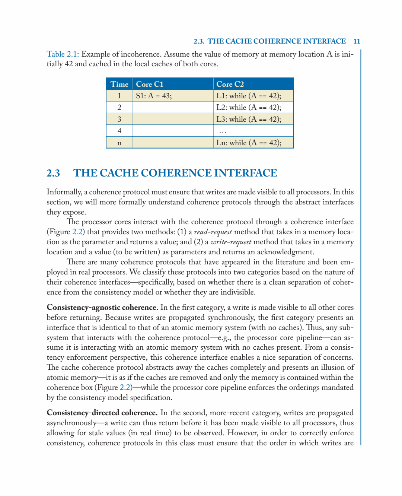
原书第 12 页PDF 34
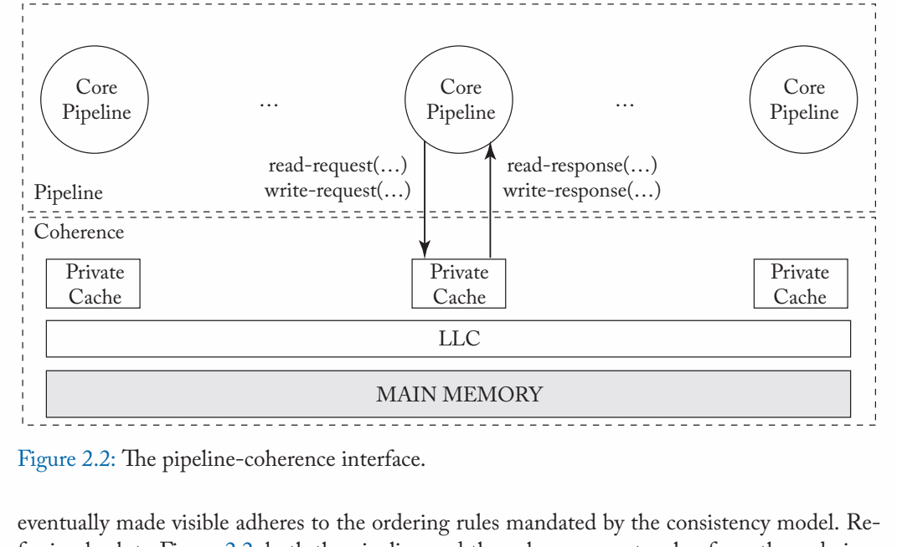
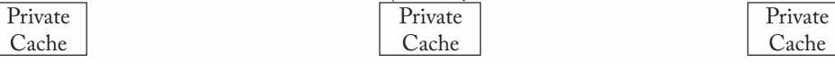
展开可搜索的英文文字
Private Private Private Cache Cache Cache展开可搜索的英文文字
LLC展开可搜索的英文文字
MAIN MEMORYENGLISHeventually made visible adheres to the ordering rules mandated by the consistency model. Referring back to Figure 2.2, both the pipeline and the coherence protocol enforce the orderings mandated by the consistency model. This second category emerged to support throughput-based general-purpose graphics processing units (GP-GPUs) and gained prominence after the publication of the first edition of this primer.1
中文最终变为可见的顺序符合内存一致性模型规定的顺序规则。回看图2.2，此时流水线和缓存一致性协议共同保证内存一致性模型要求的顺序。第二类协议的出现，是为了支持面向吞吐量的通用图形处理器（GPGPU）；在本书第一版出版之后，这类协议受到广泛关注。¹
ENGLISHThe primer (and the rest of the chapter) focuses on the first class of coherence protocols. We discuss the second class of coherence protocols in the context of heterogeneous coherence (Chapter 10).
中文本书以及本章其余部分重点讨论第一类缓存一致性协议。第二类协议将在异构缓存一致性的背景下讨论（第10章）。
ENGLISH2.4 (CONSISTENCY-AGNOSTIC) COHERENCE INVARIANTS
中文2.4 与内存一致性模型无关的缓存一致性不变量
ENGLISHWhat invariants must a coherence protocol satisfy to make the caches invisible and present an abstraction of an atomic memory system?
中文缓存一致性协议必须满足哪些不变量，才能使缓存对软件不可见，并提供原子内存系统的抽象？
ENGLISHThere are several definitions of coherence that have appeared in textbooks and in published papers, and we do not wish to present all of them. Instead, we present the definition we prefer for its insight into the design of coherence protocols. In the sidebar, we discuss alternative definitions and how they relate to our preferred definition.
中文教材和已发表论文中出现过多种缓存一致性定义，我们不打算逐一罗列。我们选择介绍最有助于理解缓存一致性协议设计的一种定义。旁注将讨论其他定义，以及它们与本书所选定义之间的关系。
ENGLISHWe define coherence through the single-writer–multiple-reader (SWMR) invariant. For any given memory location, at any given moment in time, there is either a single core that may
中文我们通过单写者多读者（SWMR）不变量定义缓存一致性。对于任意给定内存位置，在任意时刻，要么只有一个处理器核可以
ENGLISH1For those of you concerned about the implications on consistency, note that it is possible to to enforce a variety of consistency models, including strong models such as SC and TSO, using this approach.
中文¹ 如果读者担心这种方法对内存一致性的影响，需要指出：采用这种方式仍然可以实现多种内存一致性模型，包括SC和TSO等强模型。
查看 原书第 12 页 的完整原版面（PDF 34）
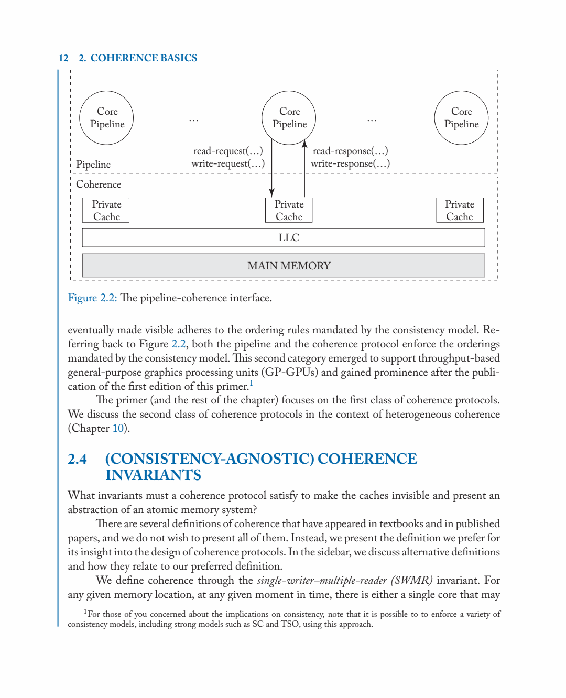
原书第 13 页PDF 35
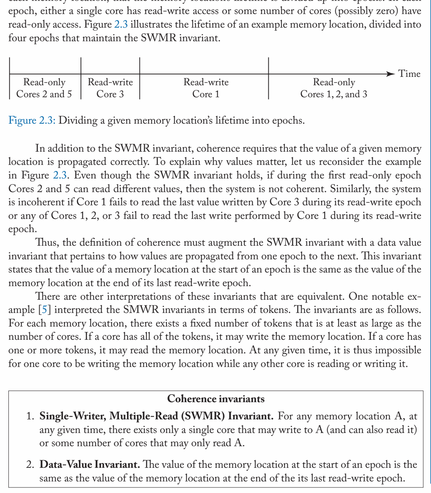
ENGLISHwrite it (and that may also read it) or some number of cores that may read it. Thus, there is never a time when a given memory location may be written by one core and simultaneously either read or written by any other cores. Another way to view this definition is to consider, for each memory location, that the memory location’s lifetime is divided up into epochs. In each epoch, either a single core has read-write access or some number of cores (possibly zero) have read-only access. Figure 2.3 illustrates the lifetime of an example memory location, divided into four epochs that maintain the SWMR invariant.
中文写入该位置（同时也可以读取），要么有若干处理器核可以读取该位置。因此，绝不会出现一个核正在写某个内存位置，而其他核同时读取或写入该位置的情况。另一种理解方式是，把每个内存位置的生命周期划分为多个时期（epoch）。在每个时期中，要么只有一个核拥有读写权限，要么有若干核（也可能为零个）拥有只读权限。图2.3将某内存位置的生命周期划分为四个满足SWMR不变量的时期。
ENGLISHIn addition to the SWMR invariant, coherence requires that the value of a given memory location is propagated correctly. To explain why values matter, let us reconsider the example in Figure 2.3. Even though the SWMR invariant holds, if during the first read-only epoch Cores 2 and 5 can read different values, then the system is not coherent. Similarly, the system is incoherent if Core 1 fails to read the last value written by Core 3 during its read-write epoch or any of Cores 1, 2, or 3 fail to read the last write performed by Core 1 during its read-write epoch.
中文除SWMR不变量外，缓存一致性还要求正确传播给定内存位置的值。为说明数据值为何重要，再看图2.3的例子。即便SWMR不变量成立，如果在第一个只读时期，核2和核5能够读到不同的值，系统仍然不具有缓存一致性。同样，如果核1没有读到核3在其读写时期最后写入的值，或者核1、核2、核3中任意一个没有读到核1在其读写时期最后写入的值，系统也不具有缓存一致性。
ENGLISHThus, the definition of coherence must augment the SWMR invariant with a data value invariant that pertains to how values are propagated from one epoch to the next. This invariant states that the value of a memory location at the start of an epoch is the same as the value of the memory location at the end of its last read-write epoch.
中文因此，缓存一致性的定义必须在SWMR不变量之外，增加一个数据值不变量，规定数据值如何从一个时期传播到下一个时期。该不变量要求：某内存位置在一个时期开始时的值，等于该位置最近一次读写时期结束时的值。
ENGLISHThere are other interpretations of these invariants that are equivalent. One notable example [5] interpreted the SMWR invariants in terms of tokens. The invariants are as follows. For each memory location, there exists a fixed number of tokens that is at least as large as the number of cores. If a core has all of the tokens, it may write the memory location. If a core has one or more tokens, it may read the memory location. At any given time, it is thus impossible for one core to be writing the memory location while any other core is reading or writing it.
中文这些不变量还有其他等价解释。一个著名例子[5]用令牌来解释SWMR不变量。其规则如下：每个内存位置拥有固定数量的令牌，数量至少等于处理器核数。如果某个核持有全部令牌，它就可以写该内存位置；如果某个核持有一个或多个令牌，它就可以读该内存位置。因此，在任何时刻，都不可能有一个核正在写入该位置，而其他核同时读取或写入该位置。
ENGLISHCoherence invariants
中文缓存一致性不变量
ENGLISH1. Single-Writer, Multiple-Read (SWMR) Invariant. For any memory location A, at any given time, there exists only a single core that may write to A (and can also read it) or some number of cores that may only read A.
中文1. 单写者多读者（SWMR）不变量。对于任意内存位置A，在任意时刻，要么只有一个核可以写A（同时也可以读取），要么有若干核只能读取A。
ENGLISH2. Data-Value Invariant. The value of the memory location at the start of an epoch is the same as the value of the memory location at the end of the its last read-write epoch.
中文2. 数据值不变量。某内存位置在一个时期开始时的值，等于该位置最近一次读写时期结束时的值。
查看 原书第 13 页 的完整原版面（PDF 35）
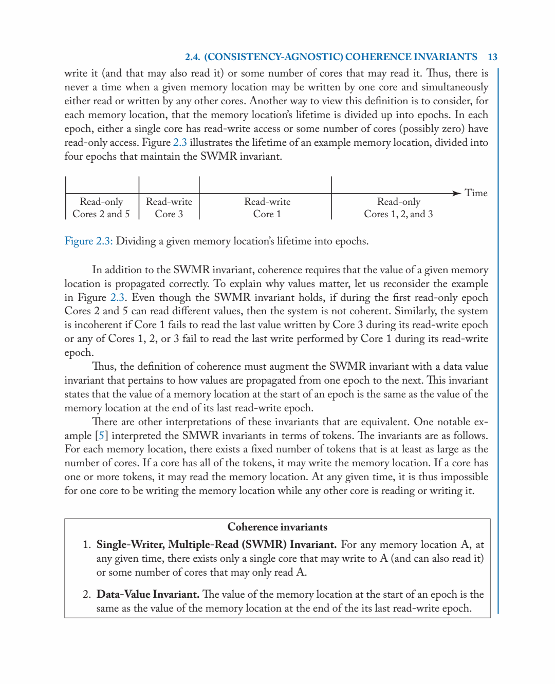
原书第 14 页PDF 36
ENGLISH2.4.1 MAINTAINING THE COHERENCE INVARIANTS The coherence invariants presented in the previous section provide some intuition into how coherence protocols work. The vast majority of coherence protocols, called “invalidate protocols,” are designed explicitly to maintain these invariants. If a core wants to read a memory location, it sends messages to the other cores to obtain the current value of the memory location and to ensure that no other cores have cached copies of the memory location in a read-write state. These messages end any active read-write epoch and begin a read-only epoch. If a core wants to write to a memory location, it sends messages to the other cores to obtain the current value of the memory location, if it does not already have a valid read-only cached copy, and to ensure that no other cores have cached copies of the memory location in either read-only or read-write states. These messages end any active read-write or read-only epoch and begin a new read-write epoch. This primer’s chapters on cache coherence (Chapters 6–9) expand greatly upon this abstract description of invalidate protocols, but the basic intuition remains the same.
中文2.4.1 维持缓存一致性不变量
上一节的不变量有助于直观理解缓存一致性协议的工作方式。绝大多数缓存一致性协议称为“无效化协议”，其设计明确以维持这些不变量为目标。一个核想读取某内存位置时，会向其他核发送消息，以获得该位置的当前值，并确保没有其他核以读写状态缓存该位置的副本。这些消息终止当前可能存在的读写时期，并开启一个只读时期。一个核想写某内存位置时，若它尚未持有有效的只读缓存副本，就通过向其他核发送消息获取当前值，同时确保其他核不再持有该位置的只读或读写缓存副本。这些消息终止当前的读写或只读时期，并开启新的读写时期。本书关于缓存一致性的各章（第6—9章）将大幅展开这一抽象描述，但基本思路保持不变。
上一节的不变量有助于直观理解缓存一致性协议的工作方式。绝大多数缓存一致性协议称为“无效化协议”，其设计明确以维持这些不变量为目标。一个核想读取某内存位置时，会向其他核发送消息，以获得该位置的当前值，并确保没有其他核以读写状态缓存该位置的副本。这些消息终止当前可能存在的读写时期，并开启一个只读时期。一个核想写某内存位置时，若它尚未持有有效的只读缓存副本，就通过向其他核发送消息获取当前值，同时确保其他核不再持有该位置的只读或读写缓存副本。这些消息终止当前的读写或只读时期，并开启新的读写时期。本书关于缓存一致性的各章（第6—9章）将大幅展开这一抽象描述，但基本思路保持不变。
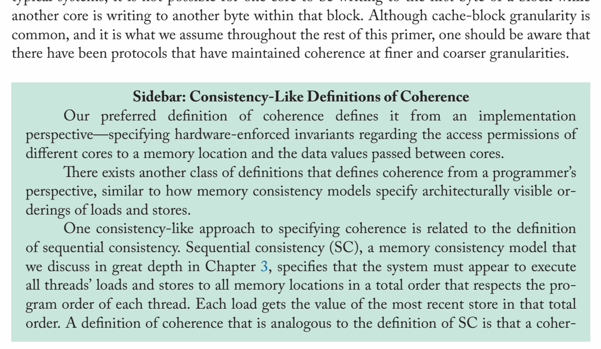
ENGLISH2.4.2 THE GRANULARITY OF COHERENCE A core can perform loads and stores at various granularities, often ranging from 1–64 bytes. In theory, coherence could be performed at the finest load/store granularity. However, in practice, coherence is usually maintained at the granularity of cache blocks. That is, the hardware enforces coherence on a cache block by cache block basis. In practice, the SWMR invariant is likely to be that, for any block of memory, there is either a single writer or some number of readers. In typical systems, it is not possible for one core to be writing to the first byte of a block while another core is writing to another byte within that block. Although cache-block granularity is common, and it is what we assume throughout the rest of this primer, one should be aware that there have been protocols that have maintained coherence at finer and coarser granularities.
中文2.4.2 缓存一致性的粒度
处理器核可以按不同粒度执行 load 和 store，通常从1字节到64字节不等。理论上，缓存一致性可以按最小的 load／store 粒度实现。但在实践中，缓存一致性通常以缓存块为粒度维护，也就是硬件逐缓存块保证一致性。因而，实际的SWMR不变量通常表述为：对于任意内存块，要么存在一个写者，要么存在若干读者。在典型系统中，不允许一个核写某块的第一个字节，同时另一个核写同一块中的另一个字节。缓存块粒度虽很常见，也是本书后续采用的假设，但应注意，也存在按更细或更粗粒度维护缓存一致性的协议。
处理器核可以按不同粒度执行 load 和 store，通常从1字节到64字节不等。理论上，缓存一致性可以按最小的 load／store 粒度实现。但在实践中，缓存一致性通常以缓存块为粒度维护，也就是硬件逐缓存块保证一致性。因而，实际的SWMR不变量通常表述为：对于任意内存块，要么存在一个写者，要么存在若干读者。在典型系统中，不允许一个核写某块的第一个字节，同时另一个核写同一块中的另一个字节。缓存块粒度虽很常见，也是本书后续采用的假设，但应注意，也存在按更细或更粗粒度维护缓存一致性的协议。
ENGLISHSidebar: Consistency-Like Definitions of Coherence Our preferred definition of coherence defines it from an implementation perspective—specifying hardware-enforced invariants regarding the access permissions of different cores to a memory location and the data values passed between cores. There exists another class of definitions that defines coherence from a programmer’s perspective, similar to how memory consistency models specify architecturally visible orderings of loads and stores. One consistency-like approach to specifying coherence is related to the definition of sequential consistency. Sequential consistency (SC), a memory consistency model that we discuss in great depth in Chapter 3, specifies that the system must appear to execute all threads’ loads and stores to all memory locations in a total order that respects the program order of each thread. Each load gets the value of the most recent store in that total order. A definition of coherence that is analogous to the definition of SC is that a coher-
中文旁注：类似内存一致性的缓存一致性定义
本书偏好的缓存一致性定义从实现角度出发，规定由硬件保证的不变量，涉及不同核对内存位置的访问权限，以及核之间传递的数据值。另一类定义则从程序员视角描述缓存一致性，类似于内存一致性模型规定体系结构层面对软件可见的 load 与 store 顺序。其中一种定义与顺序一致性有关。顺序一致性（SC）将在第3章深入讨论，它要求系统表现为：所有线程对全部内存位置的 load 和 store，都按照一个遵循各线程程序顺序的全序执行；每个 load 返回该全序中最近一次 store 写入的值。与SC定义类似的一种缓存一致性定义是：具有缓存一致性的系统
本书偏好的缓存一致性定义从实现角度出发，规定由硬件保证的不变量，涉及不同核对内存位置的访问权限，以及核之间传递的数据值。另一类定义则从程序员视角描述缓存一致性，类似于内存一致性模型规定体系结构层面对软件可见的 load 与 store 顺序。其中一种定义与顺序一致性有关。顺序一致性（SC）将在第3章深入讨论，它要求系统表现为：所有线程对全部内存位置的 load 和 store，都按照一个遵循各线程程序顺序的全序执行；每个 load 返回该全序中最近一次 store 写入的值。与SC定义类似的一种缓存一致性定义是：具有缓存一致性的系统
查看 原书第 14 页 的完整原版面（PDF 36）
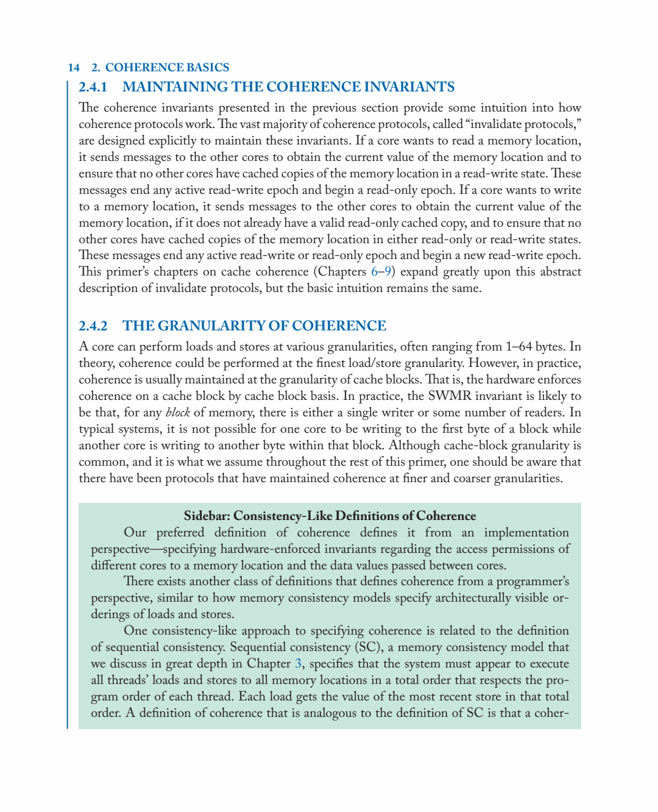
原书第 15 页PDF 37
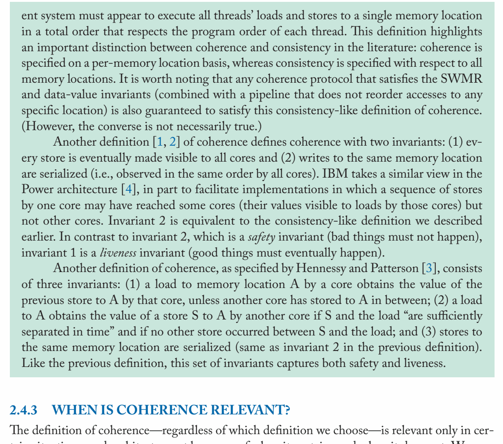
ENGLISHent system must appear to execute all threads’ loads and stores to a single memory location in a total order that respects the program order of each thread. This definition highlights an important distinction between coherence and consistency in the literature: coherence is specified on a per-memory location basis, whereas consistency is specified with respect to all memory locations. It is worth noting that any coherence protocol that satisfies the SWMR and data-value invariants (combined with a pipeline that does not reorder accesses to any specific location) is also guaranteed to satisfy this consistency-like definition of coherence. (However, the converse is not necessarily true.)
中文必须表现为，所有线程对单个内存位置的 load 和 store，都按照一个遵循各线程程序顺序的全序执行。这一定义突出了文献中缓存一致性与内存一致性的一个重要区别：缓存一致性针对单个内存位置规定，而内存一致性针对全部内存位置规定。任何满足SWMR和数据值不变量的缓存一致性协议，只要配合不会重排对同一位置的访问的流水线，就一定满足上述类似内存一致性的定义；但反过来不一定成立。
ENGLISHAnother definition [1, 2] of coherence defines coherence with two invariants: (1) every store is eventually made visible to all cores and (2) writes to the same memory location are serialized (i.e., observed in the same order by all cores). IBM takes a similar view in the Power architecture [4], in part to facilitate implementations in which a sequence of stores by one core may have reached some cores (their values visible to loads by those cores) but not other cores. Invariant 2 is equivalent to the consistency-like definition we described earlier. In contrast to invariant 2, which is a safety invariant (bad things must not happen), invariant 1 is a liveness invariant (good things must eventually happen).
中文另一种定义[1, 2]用两个不变量规定缓存一致性：（1）每个 store 最终都对所有核可见；（2）对同一内存位置的写操作被串行化，即所有核以相同顺序观察这些写操作。IBM的Power体系结构[4]也采用类似观点，部分原因是为了允许这样的实现：一个核的一系列 store 可能已到达部分核，其值对这些核的 load 可见，却尚未到达其他核。不变量2等价于前述类似内存一致性的定义。与作为安全性不变量的规则2（坏事不得发生）不同，规则1是活性不变量（好事最终必须发生）。
ENGLISHAnother definition of coherence, as specified by Hennessy and Patterson [3], consists of three invariants: (1) a load to memory location A by a core obtains the value of the previous store to A by that core, unless another core has stored to A in between; (2) a load to A obtains the value of a store S to A by another core if S and the load “are sufficiently separated in time” and if no other store occurred between S and the load; and (3) stores to the same memory location are serialized (same as invariant 2 in the previous definition). Like the previous definition, this set of invariants captures both safety and liveness.
中文Hennessy与Patterson[3]给出的另一种缓存一致性定义包含三个不变量：（1）某核对内存位置A的 load，得到该核此前对A执行的 store 所写入的值，除非期间另一个核写过A；（2）如果另一个核对A的 store S与该 load “在时间上相隔足够远”，而且S与该 load 之间没有其他 store，则该 load 得到S写入的值；（3）对同一内存位置的 store 被串行化，与上一种定义中的不变量2相同。与前一种定义一样，这组不变量同时涵盖安全性和活性。
ENGLISH2.4.3 WHEN IS COHERENCE RELEVANT? The definition of coherence—regardless of which definition we choose—is relevant only in certain situations, and architects must be aware of when it pertains and when it does not. We now discuss two important issues.
中文2.4.3 何时需要考虑缓存一致性？
无论选取哪一种定义，缓存一致性都只在特定情形下适用。体系结构设计者必须清楚它何时适用、何时不适用。下面讨论两个重要问题。
无论选取哪一种定义，缓存一致性都只在特定情形下适用。体系结构设计者必须清楚它何时适用、何时不适用。下面讨论两个重要问题。
ENGLISH• Coherence pertains to all storage structures that hold blocks from the shared address space. These structures include the L1 data cache, L2 cache, shared last-level cache (LLC), and main memory. These structures also include the L1 instruction cache and translation lookaside buffers (TLBs).2
中文• 缓存一致性涉及所有保存共享地址空间中数据块的存储结构。这些结构包括L1数据缓存、L2缓存、共享末级缓存（LLC）和主存，也包括L1指令缓存和地址转换后备缓冲器（TLB）。²
ENGLISH• Coherence is not directly visible to the programmer. Rather, the processor pipeline and coherence protocol jointly enforce the consistency model—and it is only the consistency model that is visible to the programmer.
中文• 缓存一致性并不直接对程序员可见。处理器流水线与缓存一致性协议共同保证内存一致性模型，而程序员能看到的只有内存一致性模型。
ENGLISH2In some architectures, the TLB can hold mappings that are not strictly copies of blocks in shared memory.
中文² 在某些体系结构中，TLB保存的映射不一定严格对应共享内存中某个数据块的副本。
查看 原书第 15 页 的完整原版面（PDF 37）
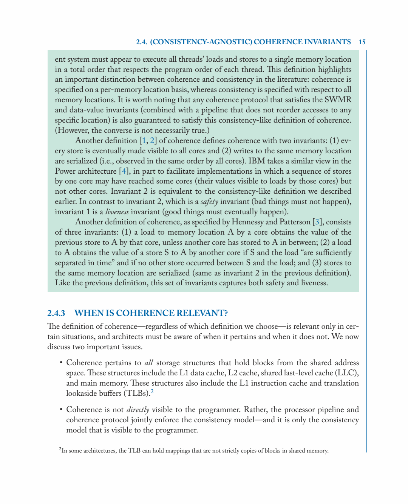
原书第 16 页PDF 38
ENGLISH2.5 REFERENCES
中文2.5 参考文献
ENGLISH[1] K. Gharachorloo. Memory consistency models for shared-memory multiprocessors. Ph.D.
中文[1] K. Gharachorloo.《共享内存多处理器的内存一致性模型》。
ENGLISHthesis, Computer System Laboratory, Stanford University, December 1995. 15
中文博士学位论文，Computer System Laboratory, Stanford University，1995年12月。引用页：15。
ENGLISH[2] K. Gharachorloo, D. Lenoski, J. Laudon, P. Gibbons, A. Gupta, and J. Hennessy.
中文[2] K. Gharachorloo、D. Lenoski、J. Laudon、P. Gibbons、A. Gupta、J. Hennessy。
ENGLISHMemory consistency and event ordering in scalable shared-memory. In Proc. of the 17th Annual International Symposium on Computer Architecture, pp. 15–26, May 1990. DOI: 10.1109/isca.1990.134503. 15
中文《可扩展共享内存中的内存一致性与事件排序》。Proc. of the 17th Annual International Symposium on Computer Architecture，15—26页，1990年5月。DOI: 10.1109/isca.1990.134503。引用页：15。
ENGLISH[3] J. L. Hennessy and D. A. Patterson. Computer Architecture: A Quantitative Approach, 4th
中文[3] J. L. Hennessy、D. A. Patterson.《计算机体系结构：量化研究方法》，
ENGLISHed. Morgan Kaufmann, 2007. 15
中文第4版。Morgan Kaufmann，2007。引用页：15。
ENGLISH[4] IBM. Power ISA Version 2.06 Revision B. http://www.power.org/resources/
中文[4] IBM.《Power ISA 2.06版，修订版B》。http://www.power.org/resources/

中文downloads/PowerISA_V2.06B_V2_PUBLIC.pdf，2010年7月。引用页：15。
ENGLISH[5] M. M. K. Martin, M. D. Hill, and D. A. Wood. Token coherence: Decoupling perfor-
中文[5] M. M. K. Martin、M. D. Hill、D. A. Wood.《令牌一致性：解耦性能
ENGLISHmance and correctness. In Proc. of the 30th Annual International Symposium on Computer Architecture, June 2003. DOI: 10.1109/isca.2003.1206999. 13
中文与正确性》。Proc. of the 30th Annual International Symposium on Computer Architecture，2003年6月。DOI: 10.1109/isca.2003.1206999。引用页：13。
查看 原书第 16 页 的完整原版面（PDF 38）
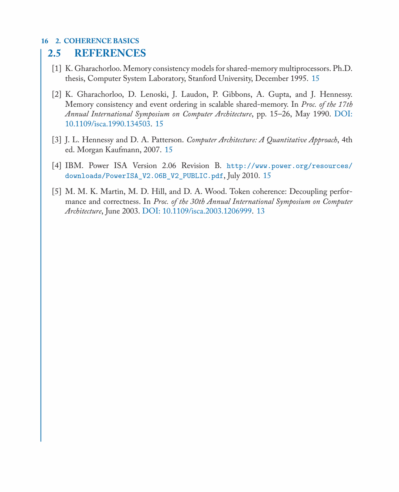